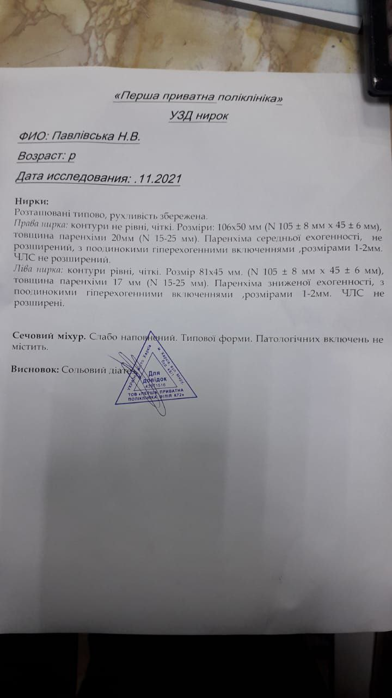
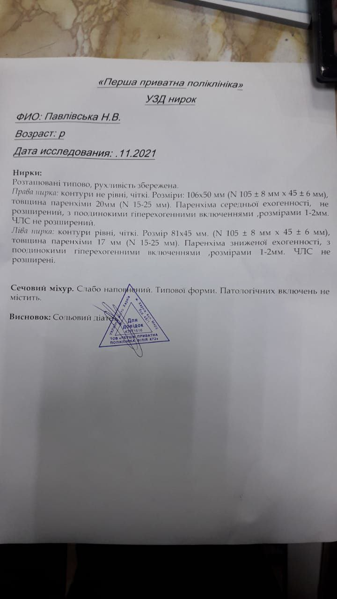

Онко-динамика (грудь): образование не визуализируется
Исходно: рекомендовали удаление молочной железы. Начало работы — февраль 2023.
Что делали: диагностика личной/родовой кармы, работа с установками и эмоциями, целительские каналы, гармонизация ментального/астрального планов, восстановление энергоструктуры.
Результат: по КТ 25.09.2023 — образование не визуализируется, грудь сохранена.
 
